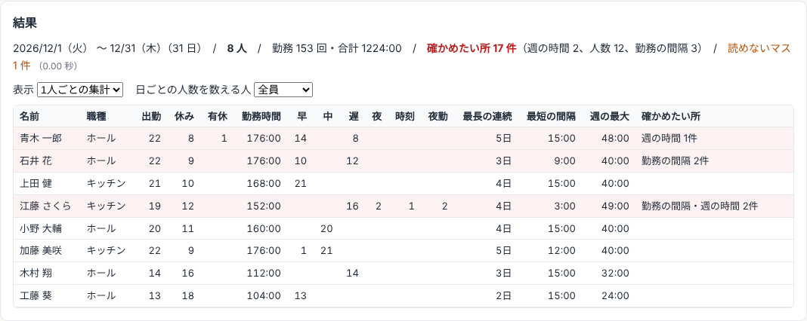
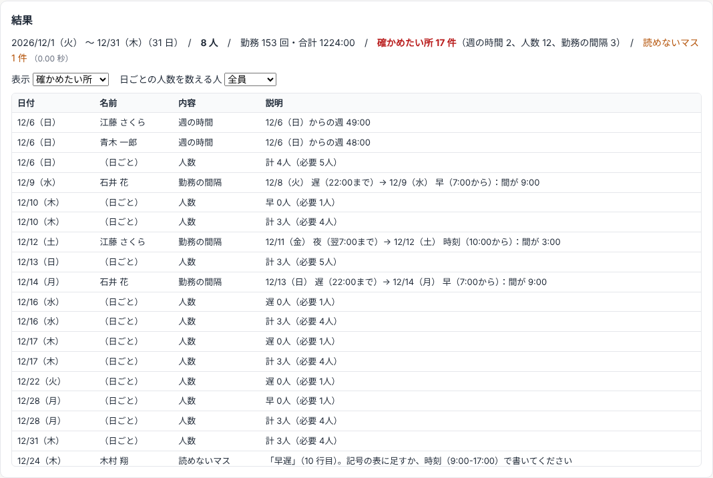

シフト表の集計と点検
飲食店・小売店・介護・学童など、シフトを組む人のためのツールです。名前×日付のマスに「早」「遅」「夜」「休」などの記号を書いたいつものシフト表を読み込むだけで、1人ごとの出勤日数・休み・勤務時間を数え、組んだシフトの気になる所を一覧にします。
- 1人ごとの集計：出勤日数、休みの日数、有休、勤務時間の合計（退勤−出勤−休憩）、早番・遅番などの記号ごとの回数、夜勤の回数
- 気になる所を知らせる：続けて働く日が決めた日数を超える所、勤務の終わりから次の始まりまでが短い所（遅番の翌日に早番など）、1週の勤務時間が多い所、時間が重なっている勤務
- 日ごとの人数：日ごとの早番・中番・遅番の人数と合計。「早 2」「土日 計 6」のように必要な人数を書けば、足りない日を出します
- 1行1件の一覧：「日付・氏名・記号・出勤・退勤・休憩・勤務時間」の表にして Excel・CSV で保存（時間帯ごとの人数と不足チェック にそのまま読み込めます）
ソフトのインストールは不要で、いつものブラウザで動きます。
お試し版はすべての機能を使えて、計算するのはシフト表の先頭5人までです。決済が終わると、そのまま製品版の画面に移動します。ブックマークしておけば、毎月のシフトに何度でも使えます。


見本のデータ（架空の名前）で作った例です。
こんなときに
- 来月のシフトを組んだあと、1人ずつ出勤日数と時間を数え直している
- 遅番の翌日に早番を入れてしまい、あとで気づいて組み直したことがある
- 「7日続けて出勤になっていないか」「週の時間が多すぎないか」を、表を目で追って確かめている
- 早番・遅番がそれぞれ何人いる日か、日ごとに数えている
できること
- 読めるシフト表：1行に1人、日付を横に並べた表。見出しの日付は「1」「2」…、「1(火)」、「12/1」、「2026/12/1」。見出しのすぐ下の曜日の行、左の「No.」「職種」の列、下の「人数」「合計」の行があってもかまいません。見出しの行と名前の列は自動で見つけ、曜日から月も選びます
- 締め日の表：「16」〜「31」「1」〜「15」のように途中で日が戻る表は、戻ったところで翌月にします。12/31 から 1/1 への年またぎも読めます
- 記号の表：「早 7:00-16:00 休憩60」「夜 22:00-翌7:00 休憩120」「休 休み」「有 有休」のように、お店の記号を自由に決められます。マスに「10:00-20:00」と時刻を直接書いた所も読み、休憩の引き方を選べます。「早(研修)」のような括弧のメモはメモとして残します
- 点検の決まり：続けて働く日数（初め6日まで）、勤務の間（初め11時間以上）、1週の時間（初め40時間まで、日曜／月曜始まり）、1日の時間、期間の合計、休みの日数。すべて変えられ、空欄にすれば見ません
- 印刷：1人ごとの集計（A4 横）、確かめたい所、日ごとの人数（A4 縦）
- 保存：Excel ファイル（.xlsx）に「1人ごと」「確かめたい所」「日ごとの人数」「1行1件」の4シート。CSV は1行1件と1人ごと
- CSV（UTF-8・Shift_JIS）と Excel ファイル（.xlsx）を読めます。Excel のシフト表をコピーして貼り付けても使えます
できないこと（購入前にご確認ください）
- シフトを自動で組むことはしません。組んだシフトを数えて、気になる所を知らせるだけです
- 給与・残業代・深夜の割増の計算はしません。勤務時間は「退勤−出勤−休憩」の単純な合計です
- 労働基準法などに合っているかの判断はしません。点検の数字は、お店・職場の決まりに合わせてご自分で決めてください
- 1つのマスに2つの勤務（「早/遅」、中抜けの「9-13 17-21」など）は読みません（読めないマスとして一覧にします）
- 表の期間の前後の勤務は見えないため、月の初めの連続勤務や週の時間は、表の中の日だけで数えます（その旨を一覧に書きます）
- スマートフォンでは操作しにくいため、パソコンでお使いください
Excel だけで数えるなら
1人ごとの早番の回数は、B2:AF2 が1人分の日付のマスなら =COUNTIF(B2:AF2,"早")、日ごとの早番の人数は =COUNTIF(B$2:B$20,"早") で数えられます。
勤務時間は、別の場所に記号と時間の表（L2:L5 に「早」「中」「遅」「夜」、M2:M5 に休憩を引いた時間）を作り、=SUMPRODUCT(COUNTIF(B2:AF2,$L$2:$L$5),$M$2:$M$5) で1人分の合計になります（同じ範囲で =SUMPRODUCT(COUNTIF(B2:AF2,$L$2:$L$5)) が出勤日数）。
手作業で大変なのは、続けて働く日数と遅番の翌日の早番のような勤務の間を確かめるときです（1人ずつ、となりの日のマスと記号の時刻を見比べる必要があります）。このツールは、記号の表をもとに全員分を一度に調べて、日付の順に一覧にします。
よくある質問
| データはどこかに送られますか？ | 送られません。読み込み・計算・印刷・保存はすべてお使いのブラウザの中で行います。記号の表・点検の決まり・表題などの設定だけをブラウザに保存し、名前やシフトの中身は保存しません。 |
|---|---|
| 空欄のマスは？ | 初めは休みの日数に数えます（数えないようにもできます）。勤務にはなりません。 |
| 夜勤の翌日の「明け」は？ | 記号の表に「明 休み」と書けば休みとして数えます。夜勤の時間は始まった日の勤務として数え、翌日の勤務との間は夜勤の終わりの時刻から計ります。 |
| 何人まで使えますか？ | 製品版は人数の制限はありません（200人×31日の計算を、手元のパソコンで0.1秒かからずに終えることを確かめています）。 |
安心してお使いいただくために
- 表はお使いのブラウザの中だけで処理し、サーバーには送信しません
- 動作環境：最新版の Chrome・Safari・Edge・Firefox（パソコン）
- 説明どおりに動かない場合は、ご購入から7日以内にご連絡いただければ返金します
シフトを組む前の休みの希望のまとめには 希望休の集計とシフト表の枠、時間帯ごとの人数（何時に何人いるか）には 時間帯ごとの人数と不足チェック、作業記録の時間の合計には 作業時間の集計、当番の割り当てには 当番表 もあります。